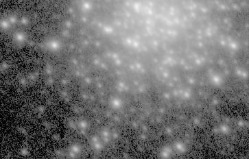

Cookbook CCD on Saturn
Krzysztof created this image of the Hercules Cluster (well, half of it) by taking four one-minute exposures with the Cookbook camera. Because of difficulty focusing the telescope, only the brighter stars are visible, and even they appear as large blobs. All that light filling the upper right half of the panel? That's the combined light of more stars.
